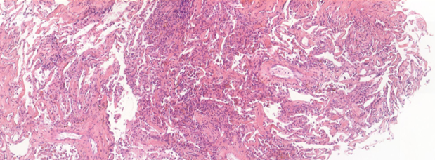

Challenge
The goal of the challenge is to detect lung rejection regions within whole slide images of lung tissue. This an object detection problem.

Dataset
For this challenge, the raw data are Whole Slide Images, in the .tif file format.
Inputs
- Train set: ~250 slides with annotated bounding boxes
filename,x1,x2,y1,y2,max_x,max_y bGaslniO4a_a.tif,29348,30108,28404,29675,82944,197632 bGaslniO4a_a.tif,11735,12379,70274,71195,82944,197632 2qj5MlLLBT_a.tif,11185,12276,11571,12671,82944,196608 2qj5MlLLBT_a.tif,14380,15583,11252,12434,82944,196608 2qj5MlLLBT_a.tif,12162,13834,71136,72440,82944,196608 2qj5MlLLBT_a.tif,59717,60925,69848,70838,82944,196608 2qj5MlLLBT_b.tif,11740,12998,10358,11449,82944,196608 2qj5MlLLBT_b.tif,61137,62039,12162,13157,82944,196608 2qj5MlLLBT_b.tif,5089,6113,71851,72582,82944,196608 Kn5fOmiTn6_b.tif,15341,15908,170845,171896,82688,197632 2XE4wBhzed_b.tif,15447,16761,142268,143025,82944,197888 -
Test set: ~150 slides to predict
filename,max_x,max_y,trustii_id hqi5y2OzZy_b.tif,82944,198144,1 1xebGQuAM7_b.tif,82944,194048,2 8xGdkL0vZt_a.tif,82944,197632,3 LQj5lC48hB_a.tif,82688,196352,4 9NlPhYAFUH_a.tif,82688,197888,5 7YxmEi5lcF_a.tif,82688,197632,6 QKwcTAZ3xm_a.tif,82688,197632,7 M62FqXX2cW_a.tif,82688,198144,8 BX9BSJROge_a.tif,111360,49920,9 -
Additionally, the organizers gave access to a +3000 images with no bounding boxes (not annotated). Yet we had slide-level labels (0/1), that tell if the slide contains some regions of interest.
file_name;presence_of_lesion
T1jPRk7jhJ.tif;1
i9xm71KbYG.tif;0
YMzaHPjyIm.tif;1
OXRsXE5qy9.tif;1
1Glok0uajd.tif;0
3CUWGrWdHN.tif;0
EFjhDwliZT.tif;0
Zgmwxif2Ro.tif;0
eUXQGwZBc0.tif;0
4ANuJVsNqn.tif;0
Expected submissions
We were asked to return our predicted bounding boxes for each slide. The number of expected bounding boxes per slide is given by the organizers.
The submission file should look like this:
trustii_id,filename,y1,y2,x1,x2
1,hqi5y2OzZy_b.tif,1,1,1,1
2,1xebGQuAM7_b.tif,2,2,2,2
3,8xGdkL0vZt_a.tif,3,3,3,3
4,LQj5lC48hB_a.tif,4,4,4,4
5,9NlPhYAFUH_a.tif,5,5,5,5
6,7YxmEi5lcF_a.tif,6,6,6,6
7,QKwcTAZ3xm_a.tif,7,7,7,7
8,M62FqXX2cW_a.tif,8,8,8,8
9,BX9BSJROge_a.tif,9,9,9,9
10,M62FqXX2cW_a.tif,10,10,10,10
11,7kiGhyiFBZ_a.tif,11,11,11,11
12,0Rv3MjnLWH_b.tif,12,12,12,12
13,Y56OlpOxAw_a.tif,13,13,13,13
14,sMNRS3N2Bp_b.tif,14,14,14,14
15,yJrCf0Bme3_a.tif,15,15,15,15
16,w6vcLYRETL_b.tif,16,16,16,16
Evaluation process
The challenge metric is the mean F2 score over the predicted bounding boxes, after thresholding at \(GIoU > 0.5\).
The organizers provide the number of expected boxes per slide. We have to submit exactly the same number of bounding boxes. Ofc their order doesn't matter.
The challenge evaluation process goes as follows:
-
A predicted bounding box is classified as a true positive (TP) if its GIoU (Generalized Intersection Over Union) is above the 0.5 threshold for one of the ground truth bounding boxes of the slide.
We get a batch of true positive, false positive and false negative samples (there is no false negative in object detection).
-
Based on these TP, FP and FN, we compute the F2 score per slide (F2 score puts more emphasis on recall than F1 score)
- Finally we take the mean F2 score over all the test slides.
More details on the challenge page: DigiLut Data Challenge